Pastas e arquivos principais
No projeto, algumas pastas e arquivos têm importância fundamental para a construção do site e na maioria dos casos precisam ter um nome específico. Vamos ver algumas delas agora.
public
A pasta public é o site propriamente dito. Isso significa que é esta pasta apenas que iremos uppar no endereço web. Ao executar a função serve_site(), todos os arquivos de outras pastas têm o propósito de agregar conteúdo ao site ou juntar os pedaços de código espalhados pelo diretório a fim de criar o site.
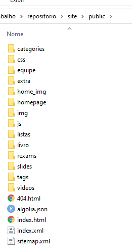
Se você já usou o pacote Bookdown, deve ter notado que ele cria mais de um arquivo html e também algumas pastas, diferente do output em html do Rmarkdown, que é apenas um arquivo html. Isso acontece porque no Bookdown, cada html é um capítulo ou subcapítulo do livro; o mesmo acontece com o site, existem vários arquivos html dentro da pasta public, pois cada página do site é um html diferente. No Bookdown, as pastas que ele gera contém arquivos que dão a aparência suave e estilosa para os html’s gerados. Sem elas, os arquivos terão uma aparência rústica, tipo o google da década de 90. O mesmo ocorre para o site, aquelas várias pastas modificam diferentes detalhes, como fonte, alinhamento, design…
themes
Aqui ficam os arquivos detalhistas de programação html, css e javascript.
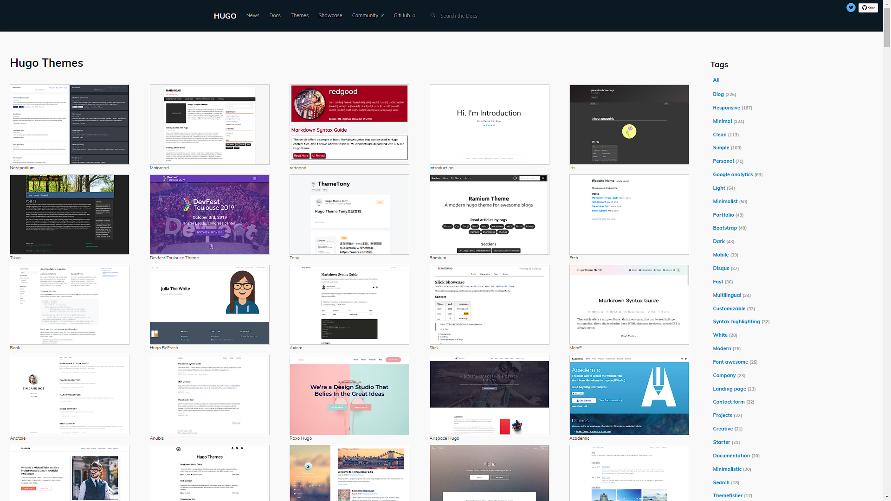
O Hugo possuí vários temas diferentes e cada um deles mantém mais ou menos a mesma estrutura de arquivos e pastas. Eles tem maneiras similares de adicionar um post, uma imagem ou um menu superior, mas mastém aparências diferentes. O que modifica essa aparência (tamanho da fonte, cor de fundo, se algum botão terá ou não uma animação) são os arquivos da pasta themes. A maior parte das alterações relacionadas à estrutura do site são feitas dentro desta pasta.
content
Aqui ficam os posts e menus superiores.
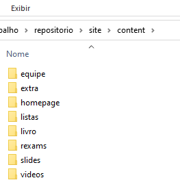
Vejamos como os arquivos desta pasta funcionam com um exemplo. Em extra/index.Rmd (é fortemente recomendável que o nome dos arquivos dessas pastas seja index).
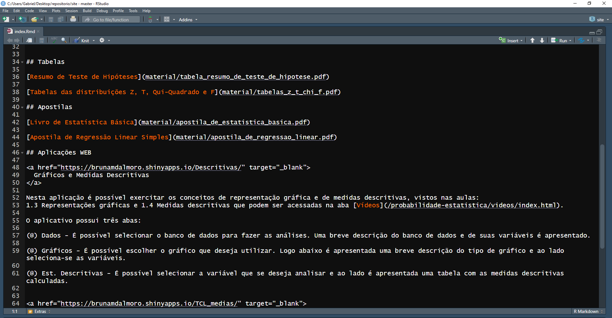
O arquivo que dá conteúdo ao menu Materiais Extras é um arquivo em Rmarkdown (.Rmd), então sabendo usar essa “linguagem” é possível alterar o conteúdo desse menu a vontade. Note que foram adicionados alguns códigos em html, que o Rmarkdown reconhece, para deixar a aparência do site mais sólida.
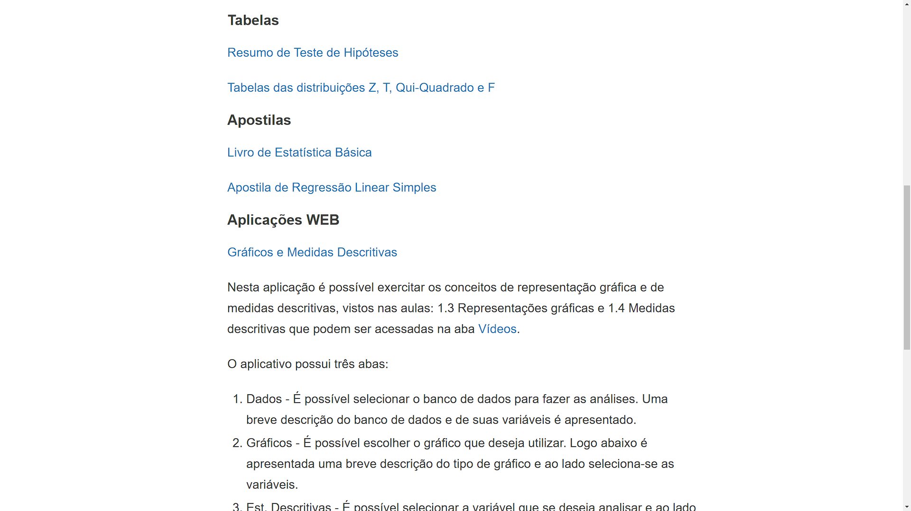
A maioria dos arquivos que a página irá usar também precisa estar na pasta. Veja, por exemplo, a pasta listas.
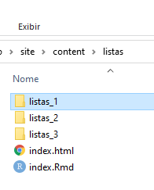
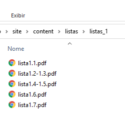
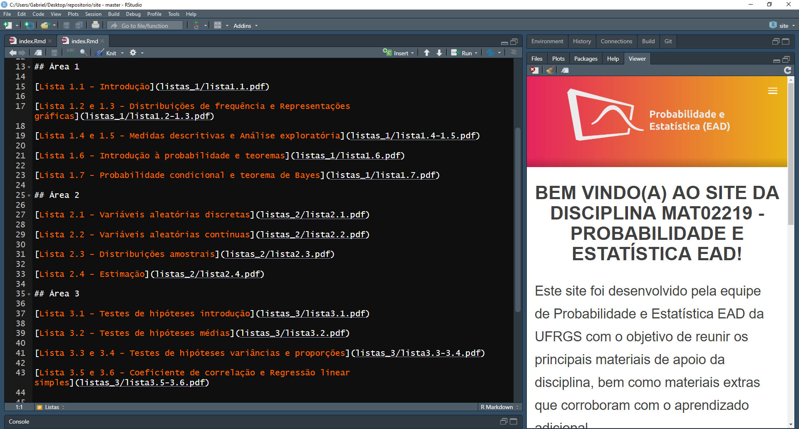
static
Arquivos que serão adicionados às páginas, como pdf’s, ficam na pasta content. Com excessão de imagens, que ficam na pasta static. Na verdade, a pasta static serve apenas para guardar imagens que serão usadas nos posts. Vejamos o exemplo da pasta equipe.
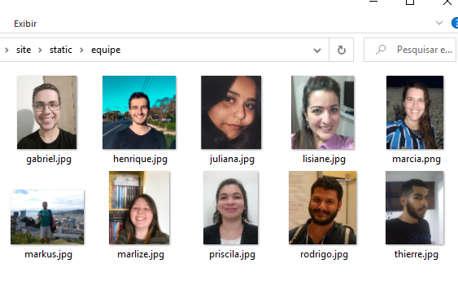
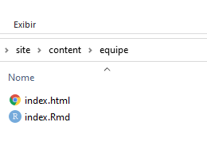
Como o nome da pasta em content e static é igual (isso é necessário), o Blogdown irá mesclar as duas pastas, e no public ficará assim.
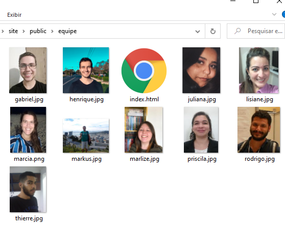
Isso facilita muito a programação da página, pois o endereço da imagem no código assume que as imagens estarão no mesmo diretório final.
config.toml
Esse arquivo controla várias macro opções do site. Recomendo que você dê uma olhada nos argumentos desse arquivo, pois a maioria deles é auto explicativa. Uma ressalva importante é que é no config.toml que são adicionados, removidos ou modificados os menus superiores (com excessão da homepage e de posts do blog, que são tratados de outra maneira).